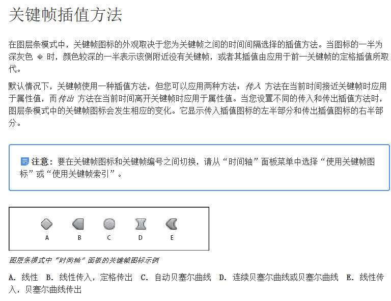

# 陈京京《AE 从 0 基础到大神视频课》
# 第一章 AE 从零基础到进阶操作
# 01. 界面基础 - 认识 AE 默认的工作界面
调整适合自己的工作区
调整系统配置（脚本写入网络、缓存位置、自动保存等）
# 02. 界面基础 - 使用素材建立自己的合成
导入素材：
- 双击素材面板
- 将素材拖动到素材面板
新建合成：
- 将素材拖动到合成图标上即可自动合成
- 点击合成图标，自定义合成内容
- 菜单栏建立合成
解释素材：AE 识别素材出错，例如帧率，点击解释素材后可手动更改
# 03. 界面基础 - 掌握 AE 核心工具栏使用
| 快捷键 | 说明 | 快捷键 | 说明 |
|---|---|---|---|
| V | 移动工具 | H | 抓手工具 |
| Z | 缩放工具 | W | 旋转工具 |
| Y | 锚点工具 | Q | 矩形工具（选中元素画蒙版，反之画形状，钢笔也一样） |
| G | 钢笔工具 | Ctrl+T | 文字工具（注意偏移等属性） |
# 04. 界面基础 - 时间线核心功能按钮学习
从左往右依次为：可见性、可听性、独显、锁定
常见属性快捷键
| 快捷键 | 说明 | 快捷键 | 说明 |
|---|---|---|---|
| A | 锚点 | P | 位置 |
| R | 旋转 | S | 缩放 |
| T | 不透明度 | Shift + 属性快捷键 | 同时显示多个元素 |
# 05. 关键帧动画 - 设定锚点与关键帧动画
选择锚点工具，按住 Ctrl 可以自动吸附锚点到中心
在 首选项 -> 常规 中勾选 在新形状图层上居中放置锚点 可以将新建的形状图层锚点自动居中
# 06. 关键帧动画 - 运动路径中的空间插值
- 线性（匀速）
- 贝塞尔曲线（两边都可以控制，一次只能控制一边）
- 连续贝塞尔曲线（同时控制双边）
- 自动贝塞尔曲线（没改动就是自动，改动后就是连续）
- 定格关键帧（瞬移）
选取所有关键帧可以整体修改位置
# 07. 关键帧动画 - 运动路径中的临时插值
临时插值和空间插值的区别：
临时插值（在时间轴上查看编辑）
空间插值（在合成面板查看编辑）

图表编辑器
# 08. 关键帧动画 - 缓动缓入缓出与图标编辑器
选中属性对应的关键帧后打开图表编辑器，可在右下角处看见三个关键帧图标
# 09. 文字动画 - 初级文字属性与动画设置
创建出来的文字，可以通过修改其源文本属性，打上关键帧做到修改的效果
也可以通过路径选项的属性设置移动路径
# 10. 文字动画 - 高级文字属性与动画设置
文字图层的动画属性是普通属性的升级，可以动态设置颜色、字符间距、字符旋转等属性
# 11. 文字动画 - 2D 与 3D 文字动画案例
可以选中要打关键帧的图层，然后展开要修改的属性，从上往下拖动丝滑打关键帧
3D 效果需要打开 3D 开关
| 快捷键 | 说明 | 快捷键 | 说明 |
|---|---|---|---|
| Alt+[] | 裁去左边或右边的内容 |
# 12. 文字动画 - 强大的内置预设文字动画
在 效果 中可以找到 动画预设 ，再找到 text 可以查看一系列内置的文字动画预设
# 13. 图层与动画 - 理解 AE 内置的纯色图层
形状图层无法建立蒙版
纯色可以建立蒙版
| 快捷键 | 说明 | 快捷键 | 说明 |
|---|---|---|---|
| Ctrl+Shift+Alt+H | 将图层填充到宽度的大小 | Ctrl+Shift+Alt+G | 将图层填充到高度的大小 |
# 14. 图层与动画 - 高级合成命令结合蒙版
| 快捷键 | 说明 | 快捷键 | 说明 |
|---|---|---|---|
| m | 打开蒙版属性 |
移动工具下双击蒙版路径，可以直接移动蒙版位置
蒙版右侧可以定义作用效果
在有蒙版的图层中添加效果，通过 效果属性 下的合成选项的 蒙版参考 可以定义效果应用到蒙版还是当前图层
# 15. 图层与动画 - 使用父子关系建立动画
开启父级和链接，拖动子级元素到父级图层，建立父子级关系
父级属性发生变动，子级元素对应属性也会发生更改
子级属性发生更改，父级属性不会更改
建立一个渐变图层，加上效果 cc star burst 可以生成星空般的效果
# 16. 图层与动画 - 空对象结合父子关系
当没有适合的父级图层时，可以设置一个空对象为父级图层，再绑定关系
# 17. 图层与动画 - 父子关系正反逆向结合
父级图层正向旋转时，子级图层也会正向旋转，但是没有实现正确的垂直关系（摩天轮案例），此时需要为子级图层单独设置旋转属性为逆向旋转相同的角度
# 18. 图层与动画 - 理解 AE 内置的形状图层
通过为形状图层添加动画或修改其属性可以达到多样化的效果
19. 图层与动画 - 理解 AE 内置的调整图层
- 会影响下面的所有图层
- 通过设置调整图层位置、缩放、宽高等属性可以局部调整对应位置下面的内容
斜角圆形图标是将该图层切换为调整图层形态
# 20. 图层与动画 - 视频图片裁剪排列技巧
单点选中时，第一个选中的图层作为最前（时间线最早）图层序列，拖动选择时最后一个选中的图层为最前图层序列（重叠为过渡，可以设置时间和效果）